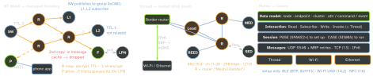
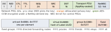
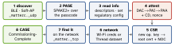
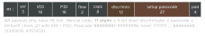
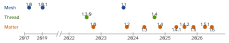

ble · folio
In one line: Bluetooth Mesh floods tiny double-encrypted messages over BLE advertising — no IP, no connections; Thread is a routed IPv6 mesh on 802.15.4 that reaches the LAN through border routers; Matter is the application layer — data model, PASE / CASE, attestation, fabrics — over Thread, Wi-Fi or Ethernet, set up over BLE (or Wi-Fi USD, NFC).
Download PDF Print view LaTeX source


Bluetooth Mesh — SIG Mesh Protocol 1.1

- Bearer: non-connectable adverts — AD
0x2Amessage ·0x2Bbeacon ·0x29PB-ADV; nodes scan all the time. GATT only through a Proxy: service0x1828(provisioning0x1827, solicitation0x1859). No links, no LE pairing. - Managed flooding: TTL 7 bits — 0 never relayed, arriving as 1 not relayed again, 2–127 relayable; a message cache drops repeats. Directed forwarding (1.1) discovers paths per subnet and mixes with flooding.
- Node → elements (one unicast address each) → models: a client publishes to an address, servers subscribe — a group is a topic.
- Features: Relay · Proxy · Friend (queues for its LPN) · Low Power (sleeps, polls its Friend; PollTimeout 1 s … ≈96 h in 100 ms steps).
- Keys, AES-128-CCM twice: NetKey (network layer, ≤4096 subnets — relays forward but cannot read) · AppKey (payload, bound per model, ≤4096) · DevKey (per node, from the provisioning ECDH, never on air).
- Size: unsegmented access message ≤11 B; segmented 12 B × ≤32 = 384 B upper transport → ≤380 B (32-bit TransMIC) / 376 B. Control, not bulk.
- Replay: SEQ 24 bits per element + 32-bit IV Index; a persisted replay list per source. SEQ lasts 2.66 years at one message / 5 s, 19 days at / 100 ms, then IV Update via beacons (up to 96 h to spread; started only by primary-subnet nodes).
- Provisioning (PB-ADV / PB-GATT, often a phone): beacon with 128-bit Device UUID → algorithm choice → P-256 ECDH (device key in band, or OOB / X.509) → OOB auth → NetKey + unicast address; both sides derive the DevKey.
| active MITM? | 1.0, key in band | 1.1, key in band | key OOB |
|---|---|---|---|
| no OOB auth | vulnerable | vulnerable | none known |
| static / output / input | vulnerable | none known if enough entropy | none known |
Entropy: 5 alphanumerics ≈25 bits, 8 ≈41; static OOB up to 256 bits (1.0: 128; its flaws CVE-2020-26556/-57/-59/-60). Key Refresh: distribute (send old, accept both) → send new → revoke old; excluded nodes are cut off — do it before discarding a node (“trash-can attack”). 1.1 adds: directed forwarding · remote provisioning (+ device-key refresh) · certificate-based provisioning · private beacons · subnet bridge · firmware update (BLOB transfer).
Thread
- Radio: IEEE 802.15.4 (2006 / 2015), 2.4 GHz O-QPSK, channels 11–26, 250 kbit/s, ≤127-byte frames, CSMA-CA, MAC acks + retries, MAC-layer encryption. 6LoWPAN (RFC 4944 / 6282) compresses and fragments IPv6 (min MTU 1280); MLE replaces neighbour discovery.
- Roles: Router (“Mesh Extender” in 1.4) · Leader (one per partition, hands out router IDs, re-elected) · REED (promotes below 16 routers) · FED · MED (radio on) · SED (polls its parent) · SSED (listens on a schedule) · Border Router (any FTD, several allowed). All attach as a child first (MLE Parent / Child ID Request).
- Routing: proactive distance-vector (like RIPng) in MLE adverts; ≤32 active routers (64 IDs, kept at 16–23), ≤511 children each. Link quality 3 / 2 / 1 / 0 → cost 1 / 2 / 4 / ∞; path cost = minimum sum.
- Addresses: mesh-local ULA /64 — ML-EID (stable, for apps) + RLOC (moves with topology) + ALOC anycast; BR prefixes via SLAAC / DHCPv6. Dataset: channel, PAN ID (2 B), XPAN ID (8 B), name, prefix, Network Key, PSKc; joining = DTLS Joiner → Commissioner via a Joiner Router.
- Border router: IPv6 both ways; devices register services by unicast SRP, the BR re-advertises them over mDNS; Border Agent for outside commissioners.
- 1.3.0 (19 Jul 2022): standard BRs, SRP / DNS-SD — what Matter needs. 1.4 (Sep 2024): credential sharing (BR shows a 9-digit one-time code → ePSKc → DTLS → dataset; required in 1.4 BRs) · NAT64 / DNS64 + DHCPv6-PD · diagnostics · TREL (802.15.4 frames in UDP/IPv6 over Wi-Fi / Ethernet) · TCAT (TLS + X.509 over BLE, bulk setup).
Matter — CSA application layer
1.0: 4 Oct 2022. Zigbee, Z-Wave, BT Mesh: only via a bridge (bridged devices = endpoints).


- Data model: node (64-bit node ID per fabric) → endpoints (0 = root, utility clusters) → clusters (server holds state, client does not) → attributes · commands (RPC) · events (past changes); paths may use groups and wildcards.
- Interaction: Read · Subscribe (reports) · Write · Invoke; Timed Write / Invoke for locks and garage doors (anti-replay); groups = IPv6 multicast.
- Sessions: PASE, commissioning only. CASE = SIGMA (Sigma1–3 or resumption), P-256 ECDH + ECDSA, chain NOC → ICAC → RCAC. MRP: 4 resends (SDK default).
- Discovery: BLE service
0xFFF6(BTP), adverts every 20–60 ms for 30 s then 150–1500 ms · Soft-AP SSIDMATTER-ddd-vvvv-pppp· DNS-SD_matterc._udp(Thread via SRP). Operational:_matter._tcp, instance<compressed fabric ID>-<node ID>. - Attestation: per-device DAC → PAI → PAA; PAAs trusted via the CSA’s Distributed Compliance Ledger; Certification Declaration signed by a CSA key (VID, PID, development / provisional / official); signature over a nonce + the session’s challenge.
- Fabric = root CA + 64-bit fabric ID. Multi-admin: one node in several fabrics sharing one data model; spec minimum 5 fabrics (SDK default 16).
- Releases: 1.2 nine appliance types · 1.3 energy reporting, EV chargers · 1.4 HRAP (router + Thread BR), enhanced multi-admin, long-idle devices + Check-In · 1.4.1 multi-device QR, NFC tag · 1.4.2 Wi-Fi-only setup (USD), revocation lists, VID check, BRs ≥150 devices on Thread 1.4 · 1.5 cameras (WebRTC), closures, soil sensors, tariffs, TCP · 1.5.1 camera multi-stream · 1.6 NFC commissioning, Joint Fabric, thermostat suggestions.

On the phone
- Apple: Matter in Home needs a home hub; Thread accessories a Thread hub (HomePod mini, HomePod 2nd gen, Apple TV 4K 3rd gen Wi-Fi + Ethernet) or a third-party BR.
MatterSupport(iOS 16.1+):MatterAddDeviceRequest; its extension commissions into the app’s own ecosystem.ThreadNetwork(iOS 15+):THClientshares Thread credentials. - Android: Play services
CommissioningClient— Google fabric and / or the app’s own (CommissioningService); Thread Network SDK:preferredCredentials,addCredentials(Android 8.0+; reaching end devices needs 8.1+).
Traps
- “Matter = Thread” — app layer vs one transport; no BR, no way off the mesh.
- A NetKey holder cannot forge app messages, but can flood, or fill replay lists with SEQ
0xFFFFFFso nodes ignore everyone until the next IV Update. - Mesh starter kit with a fixed NetKey — the owner can never rekey; ship a provisioning database and unique keys instead.
- Mesh guests get their own NetKey + AppKey; a Key Refresh that skips them revokes them.
- A BR per vendor, each forming its own network: share Thread credentials.